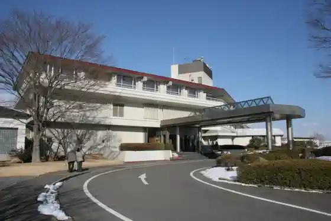
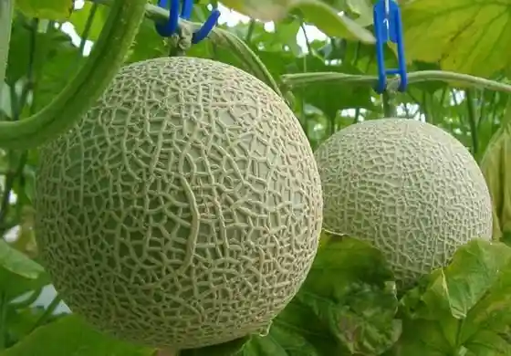
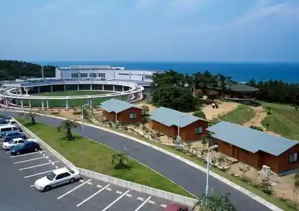
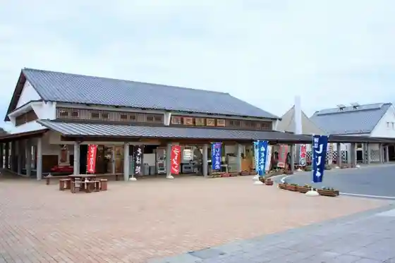

Ikoi no Village Hinuma
Hokota, Ibaraki · 0291-37-1171 · Official / source link

Foresuto Park Meron Forest
Hokota, Ibaraki · 0291-33-5621 · Official / source link

Kashima Nada Seaside Park
Hokota, Ibaraki · 0291-34-1010 · Official / source link
Taiyo Onsen Toppu Sante Taiyo
Hokota, Ibaraki · 0291-39-6500 · Official / source link

Kashima Nada Seaside Park Chokubai Tokoro (Mogitate Market)
Hokota, Ibaraki · 0291-34-1010 · Official / source link

tama Umi terrasse
Hokota, Ibaraki · 0291-32-7744 · Official / source link
Itsukushima Jinja Honden
Hokota, Ibaraki · Official / source link
Fukasaku Farm
Hokota, Ibaraki · 0291-39-8560 · Official / source link
Minami Orchard Gei
Hokota, Ibaraki · 0291-37-1049 · Official / source link
JA Hokota Famazumagatto Nadaro
Hokota, Ibaraki · 0291-34-8888 · Official / source link
Mura Ya Higashi Tei
Hokota, Ibaraki · 0291-32-3173 · Official / source link
JA Ibaraki Asahi Village Chokubai Tokoro Sanguriin Asahi
Hokota, Ibaraki · 0291-37-4147 · Official / source link
Hinuma Mizutori Shitchi Center (Kansatsu Shisetsu)
Hokota, Ibaraki · 0291-36-7486 · Official / source link
Hinuma Yottohaba
Hokota, Ibaraki · 0291-37-0629 · Official / source link
Taki Hama Coast
Hokota, Ibaraki · Official / source link
Za Roiyaruoshan
Hokota, Ibaraki · 0291-39-7511 · Official / source link
Yasuzuka Park
Hokota, Ibaraki · 0291-33-2111 · Official / source link
Muryoju Tera
Hokota, Ibaraki · 0291-36-2732 · Official / source link
Shiraho Kantorii Club
Hokota, Ibaraki · 0291-33-4131 · Official / source link
Koi no Uma Ni Komori Shokuhin
Hokota, Ibaraki · 0299-66-4045 · Official / source link
Usami Sono
Hokota, Ibaraki · Official / source link
Ikeuo Kappo Yoko Ta
Hokota, Ibaraki · 0291-32-6007 · Official / source link
Hokota Rojin Fukushi Center Tomoe So
Hokota, Ibaraki · 0291-33-4107 · Official / source link